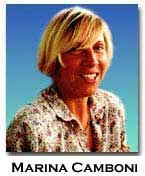

“Dora Marsden, Ezra Pound, H.D. and ‘The Art of the Future’”: Part II
by Marina Camboni
1. The underside of the tapestry
In the first part of this study (HOW2, no. 2/ September, 1999), I synthetically told the story of the The Freewoman’s transformation into The New Freewoman and The Egoist. There I promised I would provide “a short analysis of the last change of title and expand on the relation between Marsden, Pound and H.D., respectively editor of and contributors to The New Freewoman, on divergent aesthetic projects, and the directions the debate over the new in art could have taken if Pound had not dominated the scene."
The typical story of modernist criticism runs as a narrative texture where all threads combine to design the figures of Pound, Eliot and Joyce as emblematic of Anglo-American literary innovation. This story also runs through many antagonistic narratives, where other figures—of women and minority groups—are added, crowding the space and certainly reorganizing the way it is perceived, but substantially following traditional storylines. The reading I propose—which is also the guiding line of our group’s research project—shall, instead, retrace the threads, and the knots, that can be seen in the underside of the cloth, and reconstruct the cultural discourses contributing to form the design in the tapestry. From this perspective, we can notice the way differently colored threads are joined, how they cross the warp, telling of breaks and changes woven into the length of the linear warp of time. Unseen on the surface, they draw a different picture of those figures, they may even blur them and reveal not so much their uniqueness as the way they are interwoven with other figures.
The New Freewoman
In its last issue, of 12 October 1912, The Freewoman carried an appeal for support. Though only a few subscribers answered, Marsden, spurred by Rebecca West, decided to re-start the journal. As Marsden herself wrote in the issue of November 1913, the “‘emotional push’ which “landed The New Freewoman on its feet came from a tiny group of American women” (among them the writers Lucian Cary and Edna Kenton)[1] The Freewoman’s subscribers and supporters in Chicago and New York were very much interested in the paper’s pioneering work. It was their interest that continued to nourish its connection to feminism, and even the continuation of the title:
|
A mightily strong doubt as to whether there existed in what was called the “Woman Movement” anything of value sufficient to make an effort to give it expression worth while, hung on the energies of those responsible for it, and it was in this doubting frame of mind that the ‘American’ enthusiasm had its effect: with the result that this new journal came into being earlier than it otherwise would, and with the same differentiation as to gender in its title as the earlier paper.” (“Views and Comments”, I: 11, p. 203). |
Floyd Dell, the Editor of the “Friday Literary Review” of the Chicago Evening Post, even devoted a whole chapter to Dora Marsden in his Women as World Builders, of 1913, where he defined her as the “Max Stirner of feminism”. The American supporters’ effort to set up a “Thousand Club” to secure a sound financial basis was met by Marsden with a similar attempt in her own country. Together with Harriet Shaw Weaver, she began a British Thousand Club. In early 1913 a circular written by Rebecca West but forwarding Marsden’s point of view, announced the publication of The New Freewoman. Differently from its predecessor, this paper was to move beyond its insular bounds and have a transatlantic scope, addressing both British and American readers. It wanted also to go beyond feminism and spread its individualist philosophy of modernist movements, which applied to men as well as to women:
|
(it) will be the only journal of recognised standing expounding a doctrine of philosophical individualism either in England or in America. Editorially, it will endeavor to lay bare the individual basis of all that is most significant in modern movements including feminism. It will continue The Freewoman’s policy of ignoring in its discussions all existing taboos in the realms of morality and religion. (Garner, p. 97) |
In the editorial of the first issue, and in the “Views and Comments” section that follows, Marsden illustrates her new “individualist” version of the “freewoman”, clearly inspired by Max Stirner’s anarchism. Marsden’s own words seem literally taken from the opening chapter of his Ego and its Own, a book originally published in Germany in 1844 (and criticised by Karl Marx in his German Ideology) that had become fashionable among the Anglo American anarchist circles in the 1890s and 1900s.
As in the first editorial of The Freewoman, and coherent with Marsden’s antagonistic logic, the rhetorical construction of the text hinges on the antithesis of “lean” and “fat”: a metaphor which is also emblematic of the moral jurisdiction every human being has over her/his own body in Stirner’s, and Marsden’s, philosophy.
“Lean” are all those who have become “selfless” by devoting themselves to a “cause”, first of all the poor , and who have devoted themselves to the cause of honesty. The State, however, champions the interests of the “fat”, i.e., of those who have money and property even though it relies on the “lean” for support. As a consequence: “There is only one thing the down-trodden with retained dignity can do and that is to Get Up. And there is only one thing for the lean and that is, to get fat, get property: and it is the one thing they will not do”. And yet, the only solution to such a predicament for Marsden is not to wait on God’s or society’s help or to organize according to political, social or, class interests but “what a man wants doing, he will do himself.” (The New Freewoman, “The Lean Kind”, I:1, 1913, p. 2)
For Marsden property must be in a constant flux. Coherently, she invites the “lean” to go out and get the “things” they need. In so doing, they will be acting for their own benefit, and not for an abstract Cause.
In the “View and Comments” following the editorial, Marsden further explains what she deems ideological, empty words, through the example of the Suffragist Cause, Mrs. Pankhurst and her fight for “Woman’s Freedom”.
Freedom, she writes, is made of two notions and an atmosphere. There is the notion of a force, and a notion of a barrier which the force breaks through. A ‘breaking through’ is the single complex which is the ‘getting free’. A Definite action, therefore, with a positive beginning and a definable end: limited in time and complete in its operation. There exists nothing in this which explains the vague unending thing called freedom. ...which carries on an independent existence on its own account. (p. 3) |
By opposing verb and noun Marsden once again attributes a positive value
to direct action involving personal responsibility and one’s own body,
and a negative one to concept, which she believes is a bodiless, static
mental contemplation of something that has no reality. This is what the
word Freedom is for her. A few paragraphs later, she offers her definition
of a true concept:
|
A true concept is the framework which the intellect puts around something felt: feeling experienced either directly in the soul, or indirectly through the perceptions of the senses. (p. 4) |
An intellectual concept, on the contrary, is not a true concept but “a local habitation and a name given to a ‘Nothing’”. A “verbal trick” for a number of mostly sub-conscious motives, whose outcome is sentimentality, an intellectual falsity which gives rise to mechanical processes and constitutes a “poison diet” for the peoples that create it.
“Causes, she concludes, are the diversion of the feeble--of those who have lost the power of acting strongly from their own nature.” (p. 4)
Later Marsden will develop her theory of feeling, perception and the soul, but in this piece, adapting Bergson’s philosophy to her needs, she proceeds to attack the Suffragist movement, which she sees as moving mechanically, while she believes that what is needed is the natural vitality of a movement “surging, living, uprising, taking its own wayward living course.” (p. 5).
Concluding, she denounces the emptiness of the expression “Woman Movement”, which she believes should be discarded, for “Accurately speaking, there is no ‘Woman Movement’” but only “a very limited number of individual women” who claim their individuality and do not want to be lumped together into “a class, a sex, or ‘a movement’”, nor be defined according to a function, that of Mother in particular. Both “Woman” and “Mother”, are for her empty concepts which have no reality. They have been created for the subordination of the individual to the community, the state, the race but they are unreal. The characteristic of ‘Mother’ is only temporary and accidental, and if a woman becomes a mother it is only because she so desires.
Starting with the definition of “woman” as a single, separate individual who has needs and desires, Marsden ends her discourse by giving a definition of egoism and egoist which she extends to all individuals:
|
The Centre of the Universe lies in the desire of the individual, and the Universe for the individual has no meaning apart from their individual satisfactions, a means to an end. The few individual women before mentioned maintain that their own fitting description is that of Individual: Ends-in-themselves. They are Egoists. They are Autocrats, and the government of their autocracy is vested in the Self....The intensive satisfaction of the Self is for the individual the one goal in life. (emphasis mine, 5) |
On this same definition, a few issues later, Ezra Pound will base his concept of the autonomy of the author from his public.
It is not difficult to detect in Marsden’s version of anarchist individualism her political, social and feminist myopia. Her attacks on the WSPU and Emmeline Pankhurst, though certainly based on founded criticism, need not bring her to the point of negating the value of the suffragist movement or of women's solidarity. In a solipsistic attitude, she generalizes from her own experience without showing any awareness of the way ideas, and imagination—not only perceptions—can shape a woman’s body and a woman’s behavior.
However, there are some points which it is important to emphasize: the relevance she gives to the body as the source of experience, of feeling and of action and as the place where the sense of self is located. Also, a positive sense of self, based on an acknowledged power of the body, seems an appropriate proposal to be addressed to women who need to overcome the self-sacrificing, angelic ideal of a female self, represented as weak and without desires, totally identified with the maternal function.
In the way Marsden formulates her attacks on labor and feminist causes she also reveals herself a daughter of her times and throws light on her own vision of the future in art. Empty concepts are for her empty words and these are also empty symbols. It is not difficult to detect in this a ‘modernist’ attack to decadent, fin de sièle, ways of representing reality, and indirectly, to symbolism in art.
Of Mrs. Pankhurst Marsden writes that she “ventured into the maze of the symbolists, whose vulturous progeny--the empty concepts--got her.” The useless self-sacrifice of Emily Wilding Davison, who flung herself in front of the King’s horse at the Derby, is for her also a clear instance of the negative effects of such symbolic words as (women’s) “Freedom”:
Freedom is the devil which drives...an atmosphere....(which) reveals itself, half swoon, half thrill. It is the essence of sensation, the food of the voluptuary. The thrill is the memory, the aroma of far-off deeds: the swoon is the suspension of intellect which allows vague association to make these deeds appear in part as one’s own...it is an atmosphere, secured by inhaling nose-gays of ‘free-ings’...bunching them together and inhaling their decaying sweetness with exactly the same type of pleasure the drug taker and the drunkard get out of their vices...When therefore a person ‘dies for the cause of women’s freedom’ the effect of such death is to give a crowd of degenerate orgiasts a new sensation” (The New Freewoman , I:1, 1913, p. 3). |
Marsden’s attack is certainly an expression of her anarchism, but her reference to the Decadents and the Symbolists as emblematic of a linguistic and rhetoric practice which created an idealized universe, separate from reality and from self, not only expresses a criticism of Victorian sexual and cultural practices, but echoes a critical discourse that runs through most modernist movements. While denouncing Symbolist expressions, whose performative effects she finds so devastating, however, her own words bear evidence of their still pervasive presence.
To the pleasurable sensation so dear to decadent orgiasts, lost in their ideals as in narcotic fumes, Marsden opposes the tell-tale truth of the Soul’s feeling and of sensorial perception. To contemplation she opposes action. Across the Channel, in Paris a woman experimenter in art, Gertrude Stein, following her own path arrives at an analogous conclusion when she rejects names and prefers verbs, and their progressive and infinitive forms, because capable of representing unending process and vital movement.
In the same first issue, Huntly Carter, a psychologist and follower of Bergson’s philosophy, who used to write reviews for The Freewoman, contributes the first article devoted to art, revealingly entitled “The Golden Age”. Using expressions that borrow from symbolist metaphors, as well as from Nietzschian ideas, he attacks the present materialistic age that, he thinks, lives “in the Past”, be it Greece or India. Agreeing with Marsden, he believes that what is needed in the present is “a new desire - a desire to realize our spiritual potentialities”. There is nothing new in Carter’s very romantic desire, except a Nietzschean stance, for only individuals with independent personality can have this desire, individuals who are seers and not logicians, who use “intelligence and not intellect”. “Art, he writes, should discover “a definite language of the Soul... a simple, true and common language” because “the principles of Art correspond to those of the Soul... Art and Soul are one” (p. 16). “Soul” is for him the precise word for Art, because Art should not be mistaken with technique. By modeling itself on the soul Art can capture the vibrative force of Life, for Art is Life-centered and not man-centered. (p. 17). “Soul”, though undefined, is clearly an important word, which, together with the opposition between “intelligence” and “intellect” will also come up again in Marsden’s own contributions on art.
Marsden’s new individualist credo, her definition of “egoism”, spawns an animated debate which begins in the following issue and runs through most numbers till the magazine shuts down. Besides a great number of letters, critical and literary contributions reveal how the theme is a widespread object of study and reflection (see, for instance the review “Individualism” and the poem “The Egoist” by Horace Holley, in no. 6, pp.118, 119).
With issue no. 5, Ezra Pound starts his collaboration and publishes six of his own poems gathered under the collective title of “Contemporania”. In the same issue Rebecca West devotes a short article to Imagism, and the first installment of The Horses of Diomedes by Remy de Gourmont appears. Both facts testify to Pound’s will to impress his stamp on the magazine’s literary map.
Poems by other members of the imagist group—from H.D. to William Carlos Williams—with the overall title of “The Newer School”, appear in the following issue (no. 6)”. While the Imagists will be present, together or separately, in most issues, it is at this point that Aesthetic and poetic themes start to be debated. Dora Marsden herself devotes her editorial to the “Beautiful” while Ford Madox Hueffer contributes the first part of his literary autobiography.
Moving away from more controversial political topics, but expanding her philosophical research, in ”Concerning the Beautiful” Marsden explores the field of aesthetics and, after having rejected both the thoroughly subjective Romantic idea of the Beautiful as Sublime and Picturesque, and the opposite detached attitude, she launches into a definition of the Beautiful. Once more she uses a body metaphor to convey her very Whitmanian point of view:
|
This feeling for the beautiful, she writes, has its origin in a need of the soul analogous to hunger in the bodily mechanism. The soul apparently has wants whose satisfactions are essential to growth. Growth in the body is expressed in increasing extent, size. Growth in the soul is expressed in increasing consistency, power of holding together, integration as a separate individualized unit. (The New Freewoman , I: 6, 1913, p.101) |
The Beautiful, concludes Marsden, can be defined only in terms of the thing it does, and what it does is “to rally the soul into complete self-possession after being scattered by experience” (p. 104).
Marsden’s perspective is that of the person who experiences the beautiful. Pragmatically, the Beautiful, with her, is justified by its performative effects on the experiencer. On this point, however, Marsden reveals a split in her philosophy, where pragmatic and anarchist attitudes diverge. In aesthetics she can see the effect of the “Beautiful” only because it is conveyed by sensorial experience but in politics she fails to acknowledge the imaginative experience contained in words, like “Freedom” of “Justice” or “Women’s movement”, and its performative effects.
In the same issue Ford Madox Hueffer, in his “The Poet’s Eye,” concentrates on the producer’s end of art and on the world of poetry which for him can only be the present one for “modern life is so extraordinary, so hazy, so tenuous with, still ... definite and concrete spots in it” (p. 107). The modern poet, just like Villon in his own time, must be able to put in his poems “the anemic shop-girl at the Exhibition, with her bad teeth and her cheap black frock” (p. 109). Hueffer’s poet is the heir of the great traditions, the heir of all ages. The purpose of his explorations of the past, however, “is the appreciation of such facets of our own Day as God will let us perceive” (p. 109).
3. The serious artist and the art of the future
Issue number 9 opens on the first and second parts of Ezra Pound’s “The Serious Artist” which takes the place of Marsden’s editorial. This has never happened before, but it is not to be taken as a sign of Pound’s rising power within the magazine, even though Marsden had left London to concentrate on her own philosophical work. Rather, the piece is a lengthy answer to a problematic question addressed to the poet by the editor herself who is exploring art and literature as part of a new individualist philosophy and politics. As Pound explains in the opening paragraph, he has been asked to respond to the “relation of the arts to economics...what position the arts are to hold in the ideal republic.” (The New Freewoman, I: 9, 1913, p.161). Marsden has herself given an answer to the role of aesthetics, but she wants an insider for enlightenment on art’s economic and ethic functions.
In what he calls a modern “Defense of Poetry,” Pound expounds his positivist vision of the arts for “literature, poesy, are a science, just as chemistry is a science. Their subject is man, mankind and the individual...” The arts give us a great percentage of the lasting and unassailable data regarding the nature of man, of immaterial man, of man considered as a thinking and sentient creature” (p. 161). Here, for Pound, also resides art’s ethical function: for bad art is immoral and good art is the art the bears “true witness” and defines “the inner nature and conditions of man” (p.162). As for a social, economic and politic function of art coherent with Marsden’s philosophy of egoist individualism, its value comes from the fact that good art is precise and, because of this, it reveals the different nature of each individual. Pound’s anti-socialist position joins forces with Marsden’s radical anarchism opening up to a vision where state and art are isomorphic to a society of individuals: “No perfect state will be founded on the theory, or on the working hypothesis that all men are alike. No science save the arts will give us the requisite data for learning in what ways men differ” (p.163).
Above all, Pound maintains, art should be valued for its relation to life and to fundamental issues. Touching these last, he writes, “the arts give us our data of psychology, of man as to his interiors, as to the ration of his thought to his emotions, etc.” and concludes: “The touchstone of art is its precision” (163). Here is the overall value of art. However, Pound believes that only a specialist can determine the value of a work of art. The specialist is his version of the artist as scientist, an artist who, like the scientist, abstracts from the “aegrum vulgus” (p. 163).
In the third part, published with the sub-title “Emotion and Poesy” in the following issue, Pound develops his definition of art which, though aware of Bergson’s vital flow also present in Marsden’s philosophy, and still coherent with his analogy with science, leaves the medical field and moves into thermodynamics: “the thing that matters in art is a sort of energy, something more or less like electricity or radio activity, a force transfusing, welding, and unifying” (emphasis mine, The New Freewoman I: 10, 1913, p.194). He does not specify what is “unified”, “welded” or “transfused” but his verbs dilate and further articulate what Marsden had identified as the function of the Beautiful: that of integrating, restoring coherence and unity in the Soul.
Though apparently proceeding along the same line of thought as Hueffer, Pound moves away from his nineteenth century impressionism, when he states that “‘Good writing’ is perfect control” (p. 194) of that interior force or energy. Here, for him, also lies the major difference between prose and poetry, for poetry is “more highly energized” than prose. Poetry, in fact, expresses both emotions and ideas, it is “an ‘Intellectual and Emotional Complex’” where ideas and emotions “must be in harmony...must form an organism...must be an oak sprung from a acorn.” (p. 195).
This organicist metaphor reveals how Pound’s idea of poetry is still deeply rooted in romanticism. His need to compare it with prose, however, brings to the fore one of the major sources of innovation in twentieth century poetry: its competition with prose (and with painting) which moves poets to seek their models in narrators like Balzac , Flaubert and James or Tolstoy and Turgenev and their writing methods. This much is implied by Pound’s assertion that: “Good writing is writing that is perfectly controlled, the writer says just what he means. He says it with complete clarity and simplicity. He uses the smallest possible number of words” (p. 194). Emphasis on technique, also, separates the twentieth century from the romantic poet. Pound knows that technique applies both to ideas and to sound: “when the vowel and consonantal melody or sequence seems truly to bear the trace of emotion which the poem...is intended to communicate, we say that this part of the work is good.” (p.194).
A poetic organism, thus, is more complex, but also more complete than prose:
Poetry is a centaur. The thinking, word arranging, clarifying faculty must move and leap with the energizing, sentient, musical faculties. It is precisely the difficulty of this amphibious existence that keeps down the census record of good poets. |
To sum up, the best poetry has “that passionate simplicity which is beyond the precisions of the intellect” (p. 195). The result of all this, Pound concludes in the last installment of his article, is “maximum efficiency of expression” (The New Freewoman , I:11, 1913, p. 214).
Dora Marsden, probably provoked by Pound or perhaps not completely satisfied by his illustration of the function of art, in the “Views and Comments” following the first and second part of his “The Serious Artist,” starts to offer her own point of view, which she will later fully develop in “The Art of the Future,” published in no. 10.
“There exists nothing save things and the relations between things” (emphasis mine): this statement, in the opening of the comment devoted to art (and possibly the beginning of both her response to Pound’s piece and her own reflection), is worth quoting (The New Freewoman , I: 9, 1913, p.165). Unacknowledged, it will go a long way, through William Carlos Williams, into American poetry and poetics.[2]
The first thing Marsden defines is one that has not even been mentioned by Pound and has gone undefined in the previous contributions on art, the Soul:
|
The first thing of which we have any knowledge... is the life within ourselves. We call it our soul, meaning thereby an individuated entity thrown out free by the stream of living energy. It is a “thing” as electricity running along a wire is a thing, with movements, consciousness, repulsions, attractions, making excursions and returning to its shell through the apertures for entry and exit it has made; a thing which forages, feeds, dissipates or grows, by means we can learn if we keep watch. |
Building on what she had written of the Soul in relation to the Beautiful and coherently resuming the body metaphor, which she combines with Pound’s energy metaphor, Marsden gives a materialistic definition of the soul. Individual life is nurtured by an interior energy which has separated from the flow of natural energy but which participates in it: this energy moves in and out of the body increasing or diminishing with each experience.
In total agreement with Pound, she also believes that “the creative artist is one in whom life beats strongly”, that “major artists are major men” whose works are “the expression of ... energy” and, quoting him, “‘bear true witness’” (p.166).
But there is a request Marsden puts forward: the Major Poet should address what “quite inaccurately” has been called “Sex”. Sex, for her, is one with the Soul, and should not be left to the “sex-psychologist”, who is only interested in the pathology of sexuality or in emotionally unstable people: “The matter still awaits another Lucretius to unravel the nature of the thing we call Soul”.
It is, however, in her own, “The Art of the Future”, published in the tenth issue, and in another piece, “Beauty and the Senses”, in issue no. 11 of 15 Nov. 1913, that Marsden enters officially the debate on art and puts forward her request to the Modern Poet. She does so by taking the lead from Pound’s essay, even sharing his analogy of poetry and science, but following it to its extreme and applying it to the object of art, she also goes in a completely different direction.
First of all she rejects what she calls the “ludicrous” “coyness” of the artist “when asked to define” his business, “the vague waving of hands to give the expression of helplessness, in-a-sort, in the grip of some high force, which if not divine, is too much above the common level to be comprehended by the Philistine, or common-sense-man” (p. 181). Hers is an open critique to Pound’s statement that “one work of art is worth forty prefaces and as many apologia” (I: 9, p. 161) where he clearly subscribes to the idea that the work itself, and not the artist’s elucidation, is the best explanation of art, but also of his defining poetry in terms of “energy” without further analysing the contents of that energy. For her the artist’s lack of comprehension of what he is about is a matter for regret rather than comprehension. In this way the artists “are in the position the alchemists and astrologers were, before alchemy became chemistry, and astrology astronomy” (I: 10, p. 181).
Resuming Pound’s analogy of Art and Science but also differing from him, she “makes bold” and defines “the sphere of Art, as the complement of Science” (p. 181). Like science, she maintains, art should adopt the experimental method and make its advances by “unprejudiced observation of the ‘thing.’” Only when science adopted the experimental method, she maintains, it broke “the dominion of the guess—the imaginative interpretation.” Logician and rationalist as she is, she of course misses once again the creative power of imagination, but notwithstanding this clear limit, she acutely points out the limits of contemporary art, part of which follows authority and discipline, while the other is ideological art, or expresses the individual whim. Drama especially, she writes, does not follow the motions of the soul, but only ideas, for this reason its words are not in touch with living forces.
Playing with words, and using words somewhat close to Martin Heidegger’s definition of hidden, unveiled reality, Marsden maintains that an art in line with science should explore “the sphere of the occult: “the occult is the sense of the at-present hidden, but discoverable, the at-present unknown, but knowable, capable of being observed” (emphasis mine, p. 182). What remains occult is the soul, which “breaks into evidence as readily as pain breaks into a cry.” As a consequence “the line of true delineation of the soul is the direction which all progress in Art must take.”
But for this to happen artists must become aware of interior processes at work in creation, and not consider them mysterious or secret. She believes that:
|
A good artist could begin by delineating the movements of the soul when It
loves He might go further and make clear what is meant to the soul by those things which we call Beauty, Inspiration, Friendship, Intellect, Sex, God, Good and Evil. (p. 182) |
Marsden first lists the passions of the soul, for they have always been the field of art and poetry. But she goes beyond passions, for she asks the artist to discover what material facts, what movements of the soul are connected with abstract concepts, like Beauty or Love. As for passions, she is not satisfied with the way they have been treated. Love, for instance, the only feeling or emotion which has been the object of continuous and serious attention, still means sentimentalism or animal passion or is scorned. But love offers suggestions of concrete phenomena:
|
that were they offered in respect of the existence of the aether they would be accepted readily as data awaiting co-ordination. The tenderness, the melting of barriers of exclusion, the sense of surrender made and surrender permitted. The interpe(ne)tration of spirit with spirit are genuine phenomena and not verbalities. Similarly in the mishaps of love, in the severances that are unprepared-for, the loss appears actual...a loss of soul substance, a definite and tangible mutilation as though a drop-trap had fallen and taken off a hand; with a like irreconcilableness in picking up one’s life and abandoning the lost portions. (p. 183) |
The passions in her list may be universal, yet what Marsden specifies about love reveals an attention, and a need deeply rooted in the way she herself as woman must have felt about it. She may not have been aware of it, but in her request to the poet she voices a need of words for feelings and emotions deeply felt, which she does not find expressed in art. It is the same need which in the 1970s would make Adrienne Rich denounce the absence of words for women’s feelings and passions. She would herself try to answer with her own poetry, beginning with The Dream of a Common Language of 1978.
For Marsden, however, the soul harbors not only passions, but the emotions usually expressed by abstract words. For this reason she believes that the matter of intellect could “be merged and explained in the tale of the emotions.” Intellect, she writes, may be instinct and be “well served by the senses.” To sum up: “feeling is all in all” and knowledge is but “the co-ordination of feeling repeated in experience” (p. 183). The way Marsden imagines the functioning of the senses anticipates both H. D. and Virginia Woolf, whose work can also be read as an answer to her request on this point.
The senses, Marsden writes, “are attenuated feeling, filaments of the soul-stuff drawn fine, told off from the deeper-seated well of life to stand on sentinel duty at the periphery...their attention turned outward”. The senses are placed mainly in the head and reach out through the eye, “the gateway of the exploring filament” (p. 183). In “Beauty and the Senses” she gives further details on the work of the senses:
|
The senses...are the thin streams of soul which filter through the screen of matter outwards towards the external surface. They are the fringe of soul where feeling, i. e., life, runs thinnest, slender feelers, some too fine to feel more than the dimmest awareness of the shiver of contact; and some broader and stronger. The effect...of this difference in density and in intensity which is indicated in the use of the two terms “soul” and “sense” is to enable a life-unit to ingratiate itself into the phenomenal world with a minimum implication of emotion in experience. The organisation of the senses represents caution embodied in the structure of life. The senses have a twofold action...Scouts outwardly they are sentinel inward. (The New Freewoman, I:11, p. 202) |
I have not yet found Marsden’s precise source for her theory of the senses. Wherever she got her original input, it is clear that what she did with it was the result of her own philosophy. Strikingly enough, her representation of how the senses operate is very close to the description H. D. gave of a personal experience in Notes on Thought and Vision, written in July 1919, when she was recovering from illness and from childbirth in the Scilly Islands. This is also the only essay where H. D. goes into her own creative experience not only to describe it but to define the principles of creativity in a woman artist.[3]
Connecting the workings of the brain with feeling as distinct and opposed to intellect, H. D., after having distinguished three “manifestations of life: body, mind, over-mind” (p. 17) concentrates on what happens when the creative artist—but also the scientist and the philosopher—is at work. At that point, she writes, “his mind takes on an almost physical character...(it) becomes his real body” while his “over-mind becomes his brain” (p. 18):
|
That over-mind seems a cap, like water, transparent, fluid yet with definite body...it is like a closed sea-plant, jelly-fish or anemone...I should say—to continue with the jelly-fish metaphor—that long feelers reached down and through the body....There is, then, a set of super-feelings. These feelings extend out and about us; as the long, floating tentacles of the jelly-fish reach out and about him....I first realised this state of consciousness in my head. I visualise it just as well, now, centered in the love-region of the body or placed like a foetus in the body. (pp. 18-19) |
H. D. goes much farther than Marsden and tries to formulate a female poetics where both the mind and the reproductive organ, have feelers reaching inside and outside. H. D. may not have been aware of Marsden’s request to the artist nor of her theory of the senses but she did try to describe the creative process from a woman artist’s point of view. In it she also accounts for an essential difference between man and woman rooted in the body and in its power to give birth, as well as in the actual experience of maternity. In this way, and for the first time in modernist poetics she speaks of something that was relevant for Marsden: sexuality and its relevance in art.
Awareness of the potential to give birth as a distinct power of a woman’s body was missing in Marsden, who thought it a liability or rather a source of weakness in women. It was a limit, because she could not see how it made women different from men, not only their intellectual equals. On the other hand, her emphasis on the work of the senses and her connecting of emotions, senses, intellect and soul was her way of telling how important it was for a contemporary artist to search for contact with inner and outer experience.
Contact is a key-word with her. She believes that “all the senses are senses of touch, i. e., contact—the impinging of organized life upon the things foreign to itself; the shiver of difference, and the shrinking where the ‘I’ is touched by the ‘not I’ —suggestions merely, indicative of the things which await the insight of the artists of the future” (“The Art of the Future,” p. 183). Valuing what H. D. wrote, W. C. Williams, who’d began contributing to The New Freewoman, would develop a poetics of “the thing”, and of sensorial “contact” as the path to knowledge and to a poetry in touch with life.
Concluding her discourse, in “The Art of the Future” Marsden states that while all arts should delineate this contact, poetry is “the highest manifestation of self-consciousness, re-presented in terms of self-recognised emotion. In poetry self-consciousness culminates: in it alone emotion rounds on itself, articulate, and says ‘I know you’” (183).
Referring to Pound’s stated difference between prose and poetry, she goes one step further. In her own definition of poetry, she moves from simile to metaphor, indirectly implying that between the methods of art and those of science there is not so much analogy as identity, since their respective objects participate in a wider realm which unites emotion and intellect, human beings and the universe:
|
That is the broad difference between prose and poetry (not rhyme and poetry)—a difference which we, unlike Mr. Pound, think it worthwhile inquiring into. The difference is one of brevity, completeness and finish simply because in poetry all evidence of laboratory work is removed; the creaking of the thinking-machine is not there: it has done its work. Poetry is the expression of the soul-motion: perfect knowledge free both of redundancy and hesitancy: it is brief because it is reduced to the exact equivalent: it has reached the completeness of knowledge when its dimensions can be expressed in a formula. It is the formula. (p. 183) |
4. The freewoman yields to the egoist
Marsden’s definition of poetry is the end-tail, and tale, of a circular process of reflection and self-reflection which began in the first issue of The Freewoman as political action, with Dora Marsden’s founding the journal in order to build a woman’s consciousness of her self, and ends in poetry as the perfect formula “speaking of the truth concerning oneself” (“Beauty and the Senses”, p. 203) not so much as woman but as separate, genderless, individual, in search of her sole/soul’s desire.
In the two years from the beginning of her adventure, Marsden has grown more interested in her own thinking and writing than in anybody else’s and introspection has become an end in itself. Poetry and art, together with philosophy, have become her privileged paths to personal knowledge, and the highest form of self-expression. It is at this point that she finally cuts all links with the woman’s movement and with feminist issues.
Within this process it is clear that the letter written by Pound and others and published in the last issue of The New Freewoman, which I quoted in the first part of this article, was the pretext which she used to move explicitly into the realm of individualist egoism, discarding the feminist origins of the paper and its political force.
But “egoism” also destroyed Dora Marsden. Feminists never forgave her political myopia and also lost touch with what was good in her endeavor. The writers to whom she had opened her paper soon forgot her and critics followed in the same line, so much so that they forgot the political and feminist origins of The Egoist. Following Eliot and only partly Pound, formalist literary criticism emphasised technique and either timelessness or a combinatorial time dimension, flying history and the present, and offered a decontextualized design of the modernist Anglo-American literary avant-garde.
An example can be cited as an illustration of how this happened in T. S. Eliot’s edition of E. Pound’s Literary Essays (Faber 1954). There “The Serious Artist” is wrongly said to have been taken “from The Egoist A. D. 1913.” This may have been a trick of memory, but it goes a long way in revealing that Dora Marsden’s journal, The New Freewoman, where it had originally been published, and the cultural and political space she had created for herself and other women and men, in the intervening years had been usurped by the two poets and their hegemonic idea of poetry and literature. With it went her suggested exploration of feelings and of interiority. H. D., W. C. Williams and Virginia Woolf, who were much closer to her, had been too marginalized in the outline of the master narrative of modernist poetics to have any real impact until the fifties and the sixties, when things began to change. A new crop of women poets, appearing from the early 1960s through the 1990s, has brought fresh visions and new possibilities to the fields of art and of poetry.
5. Conclusion
When, in the second of the notes published in The New Freewoman no. 11, Marsden openly admitted the importance of American readers to the publication of the journal, it was not to give thanks for their support. Rather, hers was an answer to the amount of criticism she was receiving both from her anarchist readers, like Benjamin Tucker, and her feminist subscribers, whose letters and criticism were published in the comments following her piece. For different reasons, they rejected her radically solipsistic, antisocial and anti-hierarchical attitude; her refusal to stand clearly for feminism and/or anarchism. Though it was clear that in this way she lost her more ardent supporters and a quite large number of subscribers, she did not reconsider her position; rather she used the occasion to define the politics of her paper. A politics of total openness, which had in its flexibility the key to its ending:
(our disappointed American friends) imagined that The New Freewoman was “to stand for something.” Whereas it stands for nothing: it is the flexible frame waiting to be filled with the expression of the constantly shifting tale of the contributors’ emotions. It has no “Cause.” All that we require of it is that it remain flexible and appear with a different air each issue. Should an influence come in to make it rigid, as happens in all other papers, it would drop from our hands immediately. (p. 204). |
Pound’s influence made the journal rigid. Not much later she dropped it.
Notes
1. Les Garner, A Brave and Beautiful Spirit: Dora Marsden 1882-1960, Avebury, Gower Publishing Company, 1990, p. 95. [back to text]
2. On the relationship between Dora Marsden, William Carlos Williams and modernist writers, see Bruce Clarke, Dora Marsden and Early Modernism: Gender, Individualism, Science, Ann Arbor, The University of Michigan Press, 1996. [back to text]
3. Together with her notes on Sappho this essay was first published in 1982 (Notes on Thought and Vision & The Wise Sappho, San Francisco, City Lights). [back to text]
BIO: Marina Camboni is Professor of American Literature at the University of Macerata (Italy) and has published a number of studies on contemporary American women poets as well as a translation of H.D.'s Trilogy.